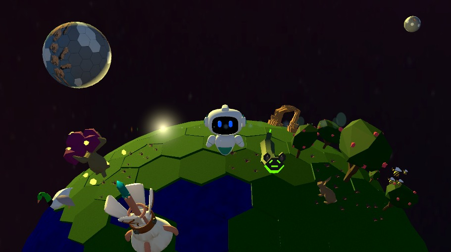
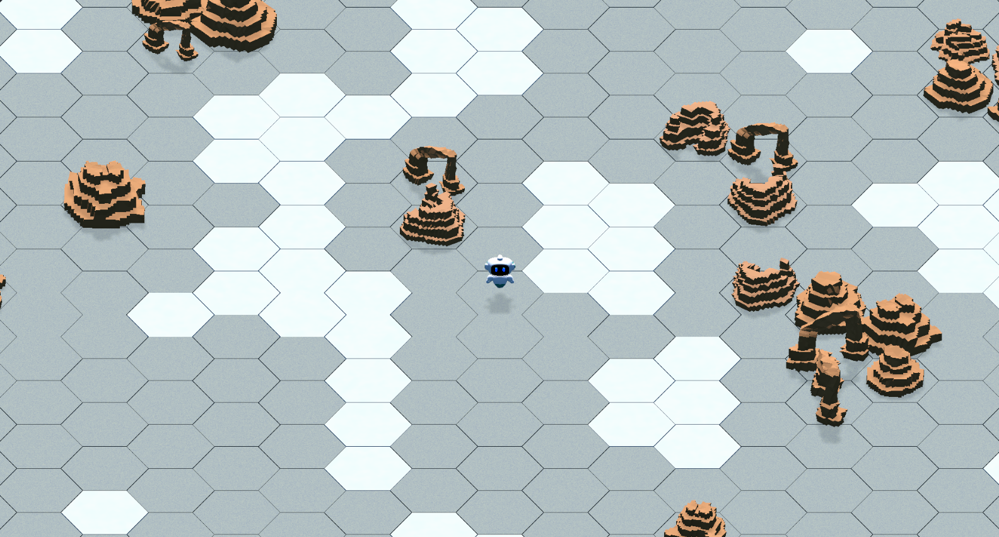
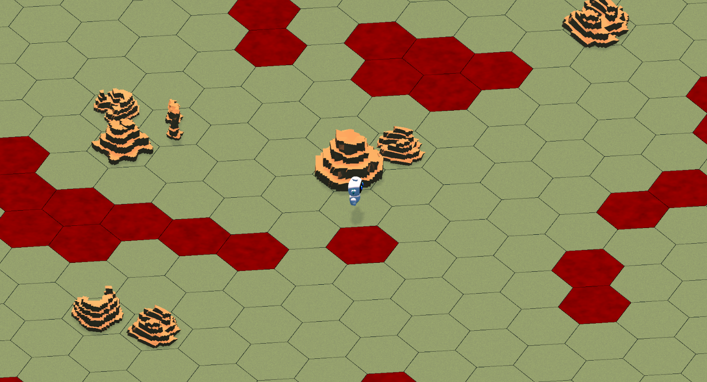
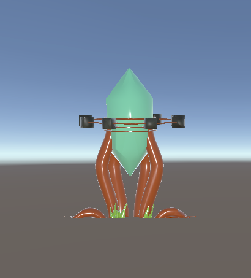
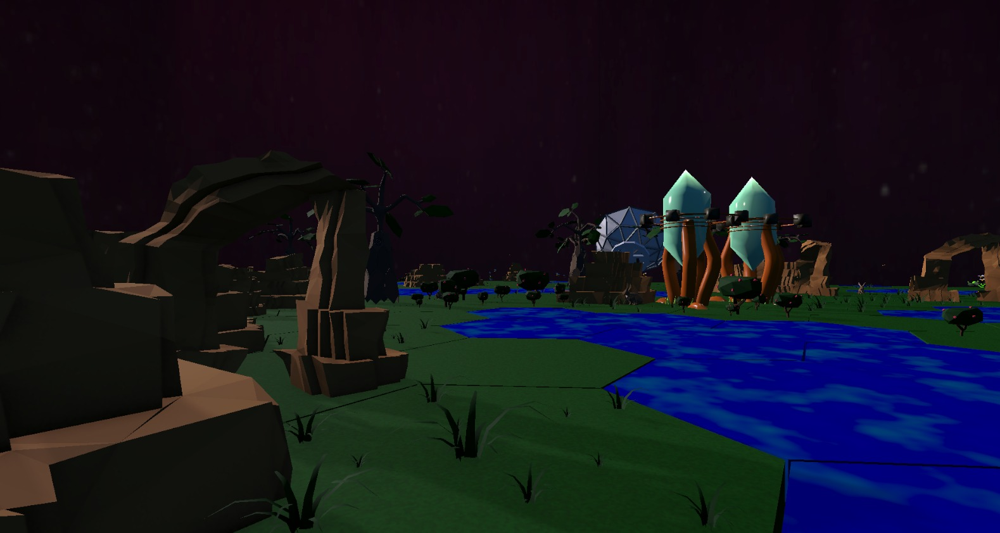

CITY BUILDER INVERTIDO
Transforma el caos en orden: construye, terraforma y, cuando el jardín florece… retírate. La naturaleza toma el mando.
Restaura planetas y devuelve la vida a la galaxia.
DESCARGAR AHORA (PC / CELULAR)Eres UJ, un robot autónomo programado para terraformar planetas inhóspitos. Restaura el equilibrio ecológico, cultiva la vida y prepara el hogar perfecto para los humanos.
Transforma el caos en orden: construye, terraforma y, cuando el jardín florece… retírate. La naturaleza toma el mando.
Descubre la historia a través de la transformación y la soledad. Sin diálogos: solo tú, el viento y los mundos que despiertan.
Un sistema que recompensa la creación, no la supervivencia. Equilibra temperatura y atmósfera y desata la vida.

🎬 GAMEPLAY REVEAL 01:30 🔊 Haz clic para reproducirUn minuto de jardinería cósmica: del páramo al jardín. Sin cortes, solo vida floreciendo.
Del páramo al jardín: regula el clima, siembra flora chica, mediana y grande, y estabiliza la ecología completa.



Un mundo helado y silencioso. Bajo el hielo, la vida espera su oportunidad. Enciende los calefactores geotérmicos.


Sin interfaz. Solo ríos, flores y vida. Así se siente un jardín terminado.
El Último Jardinero te espera. Disponible para PC y celular. La galaxia necesita más jardines.